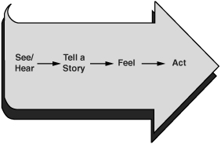

Outspoken by whom?
—DOROTHY PARKER
WHEN TOLD THAT SHE WAS VERY OUTSPOKEN
So far we’ve gone to great pains to prepare ourselves for crucial conversations. Here’s what we’ve learned. Our hearts need to be in the right place. We need to pay close attention to crucial conversations—particularly when people start feeling unsafe. And heaven forbid that we should tell ourselves clever and unhelpful stories.
So let’s say that we are well prepared. We’re ready to open our mouths and start sharing our pool of meaning. That’s right, we’re actually going to talk. Now what?
Most of the time we walk into a discussion and slide into autopilot. “Hi, how are the kids? What’s going on at work?” What could be easier than talking? We know thousands of words and generally weave them into conversations that suit our needs. Most of the time.
However, when stakes rise and our emotions kick in, well, that’s when we open our mouths and don’t do so well. In fact, as we suggested earlier, the more important the discussion, the less likely we are to be on our best behavior. More specifically, we advocate or express our views quite poorly.
To help us improve our advocacy skills, we’ll examine two challenging situations. First, we’ll look at five skills for talking when what we have to say could easily make others defensive. Second, we’ll explore how these same skills help us state our opinions when we believe so strongly in something that we risk shutting others down rather than opening them up to our ideas.
Adding information to the pool of meaning can be quite difficult when the ideas we’re about to dump into the collective consciousness contain delicate, unattractive, or controversial opinions.
“I’m sorry, Marta, but people simply don’t like working with you. You’ve been asked to leave the special-projects team.”
It’s one thing to argue that your company needs to shift from green to red packaging; it’s quite another to tell a person that he or she is offensive or unlikable or has a controlling leadership style. When the topic turns from things to people, it’s always more difficult, and to nobody’s surprise, some people are better at it than others.
When it comes to sharing touchy information, the worst alternate between bluntly dumping their ideas into the pool and saying nothing at all. Either they start with: “You’re not going to like this, but, hey, somebody has to be honest . . .” (a classic Sucker’s Choice), or they simply stay mum.
Fearful they could easily destroy a healthy relationship, those who are good at dialogue say some of what’s on their minds but understate their views out of fear of hurting others. They talk, but they sugarcoat their message.
The best at dialogue speak their minds completely and do it in a way that makes it safe for others to hear what they have to say and respond to it as well. They are both totally frank and completely respectful.
In order to speak honestly when honesty could easily offend others, we have to find a way to maintain safety. That’s a bit like telling someone to smash another person in the nose, but, you know, don’t hurt him. How can we speak the unspeakable and still maintain respect? Actually, it can be done if you know how to carefully blend three ingredients—confidence, humility, and skill.
Confidence. Most people simply won’t hold delicate conversations—well, at least not with the right person. For instance, your colleague Brian goes home at night and tells his wife that his boss, Fernando, is micromanaging him to within an inch of his life. He says the same thing over lunch when talking with his pals. Everyone knows what Brian thinks about Fernando—except, of course, Fernando.
People who are skilled at dialogue have the confidence to say what needs to be said to the person who needs to hear it. They are confident that their opinions deserve to be placed in the pool of meaning. They are also confident that they can speak openly without brutalizing others or causing undue offense.
Humility. Confidence does not equate to arrogance or pigheadedness. Skilled people are confident that they have something to say, but also realize that others have valuable input. They are humble enough to realize that they don’t have a monopoly on the truth. Their opinions provide a starting point but not the final word. They may currently believe something but realize that with new information they may change their minds. This means they’re willing to both express their opinions and encourage others to do the same
Skill. Finally, people who willingly share delicate information are good at doing it. That’s why they’re confident in the first place. They don’t make a Sucker’s Choice because they’ve found a path that allows for both candor and safety. They speak the unspeakable, and people are grateful for their honesty.
To see how to discuss sensitive issues, let’s look at an enormously difficult problem. Bob has just walked in the door, and his wife, Carole, looks upset. He can tell from her swollen eyes that she’s been crying. Only when he walks in the door, Carole doesn’t turn to him for comfort. Instead, she looks at him with an expression that says “How could you?” Bob doesn’t know it yet, but Carole thinks he’s having an affair. He’s not.
How did Carole come to this dangerous and wrong conclusion? Earlier that day she had been going over the credit card statement when she noticed a charge from the Good Night Motel—a cheap place located not more than a mile from their home. “Why would he stay in a motel so close to home?” she wonders. “And why didn’t I know about it?” Then it hits her—"That unfaithful jerk!”
Now what’s the worst way Carole might handle this (one that doesn’t involve packing up and moving back to Wisconsin)? What’s the worst way of talking about the problem? Most people agree that jumping in with an ugly accusation followed by a threat is a good candidate for that distinction. It’s also what most people do, and Carole is no exception.
“I can’t believe you’re doing this to me,” she says in a painful tone.
“Doing what?” Bob asks—not knowing what she’s talking about but figuring that whatever it is, it can’t be good.
“You know what I’m talking about,” she says, continuing to keep Bob on edge.
“Do I need to apologize for missing her birthday?” Bob wonders to himself. “No, it’s not even summer and her birthday is on . . . well, it’s sweltering on her birthday.”
“I’m sorry, I don’t know what you’re talking about,” he responds, taken aback.
“You’re having an affair, and I have proof right here!” Carole explains holding up a piece of crumpled paper.
“What’s on that paper that says I’m having an affair?” he asks, completely befuddled because (1) he’s not having an affair and (2) the paper contains not a single compromising photo.
“It’s a motel bill, you jerk. You take some woman to a motel, and you put it on the credit card?! I can’t believe you’re doing this to me!”
Now if Carole were certain that Bob was having an affair, perhaps this kind of talk would be warranted. It may not be the best way to work through the issue, but Bob would at least understand why Carole made the accusations and hurled threats.
But, in truth, she only has a piece of paper with some numbers on it. This tangible piece of evidence has made her suspicious. How should she talk about this nasty hunch in a way that leads to dialogue?
If Carole’s goal is to have a healthy conversation about a tough topic (e.g., I think you’re having an affair), her only hope is to stay in dialogue. That holds true for anybody with any crucial conversation (i.e., It feels like you micromanage me; I fear you’re using drugs). That means that despite your worst suspicions, you shouldn’t violate respect. In a similar vein, you shouldn’t kill safety with threats and accusations.
So what should you do? Start with Heart. Think about what you really want and how dialogue can help you get it. And master your story—realize that you may be jumping to a hasty Victim, Villain, or Helpless Story. The best way to find out the true story is not to act out the worst story you can generate. That will lead to self-destructive silence and violence games. Think about other possible explanations long enough to temper your emotions so you can get to dialogue. Besides, if it turns out you’re right about your initial impression, there will be plenty of time for confrontations later on.
Once you’ve worked on yourself to create the right conditions for dialogue, you can then draw upon five distinct skills that can help you talk about even the most sensitive topics. These five tools can be easily remembered with the acronym STATE. It stands for:
 Share your facts
Share your facts
 Tell your story
Tell your story
 Ask for others’ paths
Ask for others’ paths
 Talk tentatively
Talk tentatively
 Encourage testing
Encourage testing
The first three skills describe what to do. The last two tell how to do it.
In the last chapter we suggested that if you retrace your Path to Action to the source, you eventually arrive at the facts. For example, Carole found the credit card invoice. That’s a fact. She then told a story—Bob’s having an affair. Next, she felt betrayed and horrified. Finally, she attacked Bob—"I should never have married you!” The whole interaction was fast, predictable, and very ugly.
What if Carole took a different route—one that started with facts? What if she were able to suspend the ugly story she told herself (perhaps think of an alternative story) and then start her conversation with the facts? Wouldn’t that be a safer way to go? “Maybe,” she muses, “there is a good reason behind all of this. Why don’t I start with the suspicious bill and then go from there?”
If she started there, she’d be right. The best way to share your view is to follow your Path to Action from beginning to end—the same way you traveled it (Figure 7-1). Unfortunately, when we’re drunk on adrenaline, our tendency is to do precisely the opposite. Since we’re obsessing on our emotions and stories, that’s what we start with. Of course, this is the most controversial, least influential, and most insulting way we could begin.
To make matters worse, this strategy creates still another self-fulfilling prophecy. We’re so anxious to blurt out our ugly stories

Figure 7-1. The Path to Action
that we say things in extremely ineffective ways. Then, when we get bad results (and we are going to get bad results), we tell ourselves that we just can’t share risky views without creating problems. So the next time we’ve got something sticky to say, we’re even more reluctant to say it. We hold it inside where the story builds up steam, and when we do eventually share our horrific story, we do so with a vengeance. The cycle starts all over again.
Facts are the least controversial. Facts provide a safe beginning. By their very nature, facts aren’t controversial. That’s why we call them facts. For example, consider the statement: “Yesterday you arrived at work twenty minutes late.” No dispute there. Conclusions, on the other hand, are highly controversial. For example: “You can’t be trusted.” That’s hardly a fact. Actually, it’s more like an insult, and it can certainly be disputed. Eventually we may want to share our conclusions, but we certainly don’t want to open up with a controversy.
Facts are the most persuasive. In addition to being less controversial, facts are also more persuasive than subjective conclusions. Facts form the foundation of belief. So if you want to persuade others, don’t start with your stories. Start with your observations. For example, which of the following do you find more persuasive?
“I want you to stop sexually harassing me!”
or
“When you talk to me, your eyes move up and down rather than look at my face. And sometimes you put your hand on my shoulder.”
While we’re speaking here about being persuasive, let’s add that our goal is not to persuade others that we are right. We aren’t trying to “win” the dialogue. We just want our meaning to get a fair hearing. We’re trying to help others see how a reasonable, rational, and decent person could end up with the story we’re carrying. That’s all.
When we start with shocking or offensive conclusions (“Quit groping me with your eyes!” or “I think we should declare bankruptcy”), we actually encourage others to tell Villain Stories about us. Since we’ve given them no facts to support our conclusion, they make up reasons we’re saying these things. They’re likely to believe we’re either stupid or evil.
So if your goal is to help others see how a reasonable, rational, and decent person could think what you’re thinking, start with your facts.
And if you aren’t sure what your facts are (your story is absolutely filling your brain), take the time to think them through before you enter the crucial conversation. Take the time to sort out facts from conclusions. Gathering the facts is the homework required for crucial conversations.
Facts are the least insulting. If you do want to share your story, don’t start with it. Your story (particularly if it has led to a rather ugly conclusion) could easily surprise and insult others. It could kill safety in one rash, ill-conceived sentence.
BRIAN: I’d like to talk to you about your leadership style.
You micromanage me, and it’s starting to drive me nuts.
FERNANDO: What? I ask you if you’re going to be done on time and you lay into me with . . .
If you start with your story (and in so doing, kill safety), you may never actually get to the facts.
Begin your path with facts. In order to talk about your stories, you need to lead the others involved down your Path to Action. Let them experience your path from the beginning to the end, and not from the end to—well, to wherever it takes you. Let others see your experience from your point of view—starting with your facts. This way, when you do talk about what you’re starting to conclude, they’ll understand why. First the facts, then the story—and then make sure that as you explain your story, you tell it as a possible story, not as concrete fact.
BRIAN: Since I started work here, you’ve asked to meet with me twice a day. That’s more than with anyone else. You have also asked me to pass all of my ideas by you before I include them in a project. [The facts]
FERNANDO: What’s your point?
BRIAN: I’m not sure that you’re intending to send this message, but I’m beginning to wonder if you don’t trust me. Maybe you think I’m not up to the job or that I’ll get you into trouble. Is that what’s going on? [The possible story]
FERNANDO: Really, I was merely trying to give you a chance to get my input before you got too far down the path on a project. The last guy I worked with was constantly taking his project to near completion only to learn that he’d left out a key element. I’m trying to avoid surprises.
Earn the right to share your story by starting with your facts. Facts lay the groundwork for all delicate conversations.
Sharing your story can be tricky. Even if you’ve started with your facts, the other person can still become defensive when you move from facts to stories. After all, you’re sharing potentially unflattering conclusions and judgments.
Why share your story in the first place? Because the facts alone are rarely worth mentioning. It’s the facts plus the conclusion that call for a face-to-face discussion. In addition, if you simply mention the facts, the other person may not understand the severity of the implications. For example:
“I noticed that you had company software in your briefcase.”
“Yep, that’s the beauty of software. It’s portable.”
“That particular software is proprietary.”
“It ought to be! Our future depends on it.”
“My understanding is that it’s not supposed to go home.”
“Of course not. That’s how people steal it.”
(Sounds like it’s time for a conclusion.) “I was wondering what the software is doing in your briefcase. It looks like you’re taking it home. Is that what’s going on here?”
It takes confidence. To be honest, it can be difficult to share negative conclusions and unattractive judgments (e.g., “I’m wondering if you’re a thief”). It takes confidence to share such a potentially inflammatory story. However, if you’ve done your homework by thinking through the facts behind your story you’ll realize that you are drawing a reasonable, rational, and decent conclusion. One that deserves hearing. And by starting with the facts, you’ve laid the groundwork. By thinking through the facts and then leading with them, you’re much more likely to have the confidence you need to add controversial and vitally important meaning to the shared pool.
Don’t pile it on. Sometimes we lack the confidence to speak up, so we let problems simmer for a long time. Given the chance, we generate a whole arsenal of unflattering conclusions. For example, you’re about to hold a crucial conversation with your child’s second-grade teacher. The teacher wants to hold your daughter back a year. You want your daughter to advance right along with her age group. This is what’s going on in your head:
“I can’t believe this! This teacher is straight out of college, and she wants to hold Debbie back. To be perfectly frank, I don’t think she gives much weight to the stigma of being held back. Worse still, she’s quoting the recommendation of the school psychologist. The guy’s a real idiot. I’ve met him, and I wouldn’t trust him with a common cold. I’m not going to let these two morons push me around.”
Which of these insulting conclusions or judgments should you share? Certainly not the entire menagerie of unflattering tales. In fact, you’re going to need to work on this Villain Story before you have any hope of healthy dialogue. As you do, your story begins to sound more like this (note the careful choice of terms—after all, it is your story, not the facts):
“When I first heard your recommendation, my initial reaction was to oppose your decision. But after thinking about it, I’ve realized I could be wrong. I realized I don’t really have any experience about what’s best for Debbie in this situation—only fears about the stigma of being held back. I know it’s a complex issue. I’d like to talk about how both of us can more objectively weigh this decision.”
Look for safety problems. As you share your story, watch for signs that safety is deteriorating. If people start becoming defensive or appear to be insulted, step out of the conversation and rebuild safety by Contrasting.
Use Contrasting. Here’s how it works:
“I know you care a great deal about my daughter, and I’m confident you’re well-trained. That’s not my concern at all. I know you want to do what’s best for Debbie, and I do too. My only issue is that this is an ambiguous decision with huge implications for the rest of her life.”
Be careful not to apologize for your views. Remember, the goal of Contrasting is not to water down your message, but to be sure that people don’t hear more than you intend. Be confident enough to share what you really want to express.
We mentioned that the key to sharing sensitive ideas is a blend of confidence and humility. We express our confidence by sharing our facts and stories clearly. We demonstrate our humility by then asking others to share their views.
So once you’ve shared your point of view—facts and stories alike—invite others to do the same. If your goal is to learn rather than to be right, to make the best decision rather than to get your way, then you’ll be willing to hear other views. By being open to learning we are demonstrating humility at its best.
For example, ask yourself: “What does the schoolteacher think?” “Is your boss really intending to micromanage you?” “Is your spouse really having an affair?”
To find out others’ views on the matter, encourage them to express their facts, stories, and feelings. Then carefully listen to what they have to say. Equally important, be willing to abandon or reshape your story as more information pours into the Pool of Shared Meaning.
If you look back at the vignettes we’ve shared so far, you’ll note that we were careful to describe both facts and stories in a tentative way. For example, “I was wondering why . . .”
Talking tentatively simply means that we tell our story as a story rather than disguising it as a fact. “Perhaps you were unaware . . .” suggests that you’re not absolutely certain. “In my opinion . . .” says you’re sharing an opinion and no more.
When sharing a story, strike a blend between confidence and humility. Share in a way that expresses appropriate confidence in your conclusions while demonstrating that, if appropriate, you want your conclusions challenged. To do so, change “The fact is” to “In my opinion.” Swap “Everyone knows that” for “I’ve talked to three of our suppliers who think that.” Soften “It’s clear to me” to “I’m beginning to wonder if.”
Why soften the message? Because we’re trying to add meaning to the pool, not force it down other people’s throats. If we’re too forceful, the information won’t make it into the pool. Besides, with both facts and stories, we’re not absolutely certain they’re true. Our observations could be faulty. Our stories—well, they’re only educated guesses.
In addition, when we use tentative language, not only does it accurately portray our uncertain view, but it also helps reduce defensiveness and makes it safe for others to offer differing opinions. One of the ironies of dialogue is that when we’re sharing controversial ideas with potentially resistant people, the more forceful we are, the less persuasive we are. In short, talking tentatively can actually increase our influence.
Tentative, not wimpy. Some people are so worried about being too forceful or pushy that they err in the other direction. They wimp out by making still another Sucker’s Choice. They figure that the only safe way to share touchy data is to act as if it’s not important.
“I know this is probably not true . . .” or “Call me crazy but . . .”
When you begin with a complete disclaimer and do it in a tone that suggests you’re consumed with doubt, you do the message a disservice. It’s one thing to be humble and open. It’s quite another to be clinically uncertain. Use language that says you’re sharing an opinion, not language that says you’re a nervous wreck.
To get a feel for how to best share your story, making sure that you’re neither too hard nor too soft, consider the following examples:
Too soft: “This is probably stupid, but . . .”
Too hard: “How come you ripped us off?”
Just right: “It’s starting to look like you’re taking this home for your own use. Is that right?”
Too soft: “I’m ashamed to even mention this, but . . .”
Too hard: “Just when did you start using hard drugs?”
Just right: “It’s leading me to conclude that you’re starting to use drugs. Do you have another explanation that I’m missing here?”
Too soft: “It’s probably my fault, but . . .”
Too hard: “You wouldn’t trust your own mother to make a one-minute egg!”
Just right: “I’m starting to feel like you don’t trust me. Is that what’s going on here? If so, I’d like to know what I did to lose your trust.”
Too soft: “Maybe I’m just oversexed or something, but . . .”
Too hard: “If you don’t find a way to pick up the frequency, I’m walking.”
Just right: “I don’t think you’re intending this, but I’m beginning to feel rejected.”
When you ask others to share their paths, how you phrase your invitation makes a big difference. Not only should you invite others to talk, but you have to do so in a way that makes it clear that no matter how controversial their ideas are, you want to hear them. Others need to feel safe sharing their observations and stories—even if they differ. Otherwise, they don’t speak up and you can’t test the accuracy and relevance of your views.
This becomes particularly important when you’re having a crucial conversation with people who might move to silence. Some people make Sucker’s Choices in these circumstances. They worry that if they share their true opinions, others will clam up. So they choose between speaking their minds and hearing others out. But the best at dialogue don’t choose. They do both. They understand that the only limit to how strongly you can express your opinion is your willingness to be equally vigorous in encouraging others to challenge it.
Invite opposing views. So if you think others may be hesitant, make it clear that you want to hear their views—no matter their opinion. If they disagree, so much the better. If what they have to say is controversial or even touchy, respect them for finding the courage to express what they’re thinking. If they have different facts or stories, you need to hear them to help complete the picture. Make sure they have the opportunity to share by actively inviting them to do so: “Does anyone see it differently?” “What am I missing here?” “I’d really like to hear the other side of this story.”
Mean it. Sometimes people offer an invitation that sounds more like a threat than a legitimate call for opinions. “Well, that’s how I see it. Nobody disagrees, do they?” Invite people with both words and tone that say “I really want to hear from you.” For instance: “I know people have been reluctant to speak up about this, but I would really love to hear from everyone.”
Or: “I know there are at least two sides to this story. Could we hear differing views now? What problems could this decision cause us?”
Play devil’s advocate. Occasionally you can tell that others are not buying into your facts or story, but they’re not speaking up either. You’ve sincerely invited them, even encouraged differing views, but nobody says anything. To help grease the skids, play devil’s advocate. Model disagreeing by disagreeing with your own view. “Maybe I’m wrong here. What if the opposite is true? What if the reason sales have dropped is because . . .”
To see how all of the STATE skills fit together in a touchy conversation, let’s return to the motel bill. Only this time, Carole does a far better job of bringing up a delicate issue.
BOB: Hi honey, how was your day?
CAROLE: Not so good.
BOB: Why’s that?
CAROLE: I was checking our credit card bill, and I noticed a charge of forty-eight dollars for the Good Night Motel down the street. [Shares facts]
BOB: Boy, that sounds wrong.
CAROLE: It sure does.
BOB: Well, don’t worry. I’ll check into it one day when I’m going by.
CAROLE: I’d feel better if we checked right now.
BOB: Really? It’s less than fifty bucks. It can wait.
CAROLE: It’s not the money that has me worried.
BOB: You’re worried?
CAROLE: It’s a motel down the street. You know that’s how my sister found out that Phil was having an affair. She found a suspicious hotel bill. [Shares story—tentatively] I don’t have anything to worry about do I? What do you think is going on with this bill? [Asks for other’s path]
BOB: I don’t know, but you certainly don’t have to worry about me.
CAROLE: I know that you’ve given me no reason to question your fidelity. I don’t really believe that you’re having an affair. [Contrasting] It’s just that it might help put my mind to rest if we were to check on this right now. Would that bother you? [Encourages testing]
BOB: Not at all. Let’s give them a call and find out what’s going on.
When this conversation actually did take place, it sounded exactly like the one portrayed above. The suspicious spouse avoided nasty accusations and ugly stories, shared facts, and then tentatively shared a possible conclusion. As it turns out, the couple had gone out to a Chinese restaurant earlier that month. The owner of the restaurant also owned the motel and used the same credit card imprinting machine at both establishments. Oops.
By tentatively sharing a story rather than attacking, name-calling, and threatening, the worried spouse averted a huge battle, and the couple’s relationship was strengthened at a time when it could easily have been damaged.
Now let’s turn our attention to another communication challenge. This time you’re not offering delicate feedback or iffy stories; you’re merely going to step into an argument and advocate your
point of view. It’s the kind of thing you do all the time. You do it at home, you do it at work, and yes, you’ve even been known to fire off an opinion or two while standing in line at the DMV.
Unfortunately, as stakes rise and others argue differing views—and you just know in your heart of hearts that you’re right and they’re wrong—you start pushing too hard. You simply have to win. There’s too much at risk and only you have the right ideas. Left to their own devices, others will mess things up. So when you care a great deal and are sure of your views, you don’t merely speak—you try to force your opinions on others. Quite naturally, others resist. You in turn push even harder.
As consultants, we (the authors) watch this kind of thing happen all the time. For instance, seated around the table is a group of leaders who are starting to debate an important topic. First, someone hints that she’s the only one with any real insight. Then someone else starts tossing out facts like so many poisonous darts. Another—it just so happens someone with critical information—retreats into silence. As emotions rise, words that were once carefully chosen and tentatively delivered are now spouted with an absolute certainty that is typically reserved for claims that are nailed to church doors or carved on stone tablets.
In the end, nobody is listening, everyone is committed to silence or violence, and the Pool of Shared Meaning is dry. Nobody wins.
It starts with a story. When we feel the need to push our ideas on others, it’s generally because we believe we’re right and everyone else is wrong. There’s no need to expand the pool of meaning, because we own the pool. We also firmly believe it’s our duty to fight for the truth that we’re holding. It’s the honorable thing to do. It’s what people of character do.
Of course, others aren’t exactly villains in this story. They simply don’t know any better. We, on the other hand, are modern-day heroes crusading against naiveté and tunnel vision.
We feel justified in using dirty tricks. Once we’re convinced that it’s our duty to fight for the truth, we start pulling out the big guns. We use debating tricks that we’ve picked up throughout the years. Chief among them is the ability to “stack the deck.” We cite information that supports our ideas while hiding or discrediting anything that doesn’t. Then we spice things up with exaggeration: “Everyone knows that this is the only way to go.” When this doesn’t work, we lace our language with inflammatory terms: “All right-thinking people would agree with me.”
From there we employ any number of dirty tricks. We appeal to authority: “Well, that’s what the boss thinks.” We attack the person: “You’re not so naive as to actually believe that?” We draw hasty generalizations: “If it happened in our overseas operation, it’ll happen here for sure.”
And again, the harder we try and the more forceful our tactics, the greater the resistance we create, the worse the results, and the more battered our relationships.
The solution to excessive advocacy is actually rather simple—if you can just bring yourself to do it. When you find yourself just dying to convince others that your way is best, back off your current attack and think about what you really want for yourself, others, and the relationship. Then ask yourself, “How would I behave if these were the results I really wanted?” When your adrenaline level gets below the 0.05 legal limit, you’ll be able to use your STATE skills.
First, watch for the moment when people start to resist you. Turn your attention from the topic (no matter how important) to yourself. Are you leaning forward? Are you speaking more loudly? Are you starting to try to win? Are you speaking in lengthy monologues and using dirty tricks? Remember: The more you care about an issue, the less likely you are to be on your best behavior.
Second, tone down your approach. Open yourself up to the belief that others might have something to say, and better still, they might even hold a piece of the puzzle—and then ask them for their views.
Of course, this isn’t easy. Backing off when we care the most is so counterintuitive that most of us have trouble pulling it off. It’s not easy to soften your language when you’re positive about something. And who wants to ask for other views when you know they’re wrong? That’s positively nuts.
In fact, it can feel disingenuous to be tentative when your own strong belief is being brought into question. Of course, when you watch others shift from healthy dialogue to forcing their way on others, it’s obvious that if they don’t back off, nobody will buy in. That’s when you’re watching others. On the other hand, when we ourselves are pushing hard, it’s the correct thing to do. Right?
Let’s face it. When it comes to our strongest views, passion can be our enemy. Of course, feeling strongly about something isn’t bad in and of itself. It’s okay to have strong opinions. The problem comes when we try to express them.
For instance, when we believe strongly in a concept or a cause, our emotions kick in and we start trying to force our way onto others. As our emotions kick in, our ideas no longer flow into the pool. Instead, our thoughts shoot out of our mouths like water out of a raging fire hydrant. And guess what—others become defensive. When this happens, when our emotions turn our ideas into a harsh and painful stream of thoughts, our honest passion kills the argument rather than supports it.
Catch yourself. So what’s a person to do? Catch yourself before you launch into a monologue. Realize that if you’re starting to feel indignant or if you can’t figure out why others don’t buy in—after all, it’s so obvious to you—recognize that you’re starting to enter dangerous territory.
Back off your harsh and conclusive language, not your belief. Hold to your belief; merely soften your approach.
When you have a tough message to share, or when you are so convinced of your own rightness that you may push too hard, remember to STATE your path:
 Share your facts. Start with the least controversial, most persuasive elements from your Path to Action.
Share your facts. Start with the least controversial, most persuasive elements from your Path to Action.
 Tell your story. Explain what you’re beginning to conclude.
Tell your story. Explain what you’re beginning to conclude.
 Ask for others’ paths. Encourage others to share both their facts and their stories.
Ask for others’ paths. Encourage others to share both their facts and their stories.
 Talk tentatively. State your story as a story—don’t disguise it as a fact.
Talk tentatively. State your story as a story—don’t disguise it as a fact.
 Encourage testing. Make it safe for others to express differing or even opposing views.
Encourage testing. Make it safe for others to express differing or even opposing views.
See Crucial Skills (like STATE) in Action! |
Watch examples of the crucial conversations skills taught in this book by accessing our online video library. In one example, Connie thinks her husband, Bruce, is undercutting her with the children. First she tells an ugly story, and then she tries to STATE her path. Visit www.vitalsmarts.com/bookresources to watch how it unfolds! |